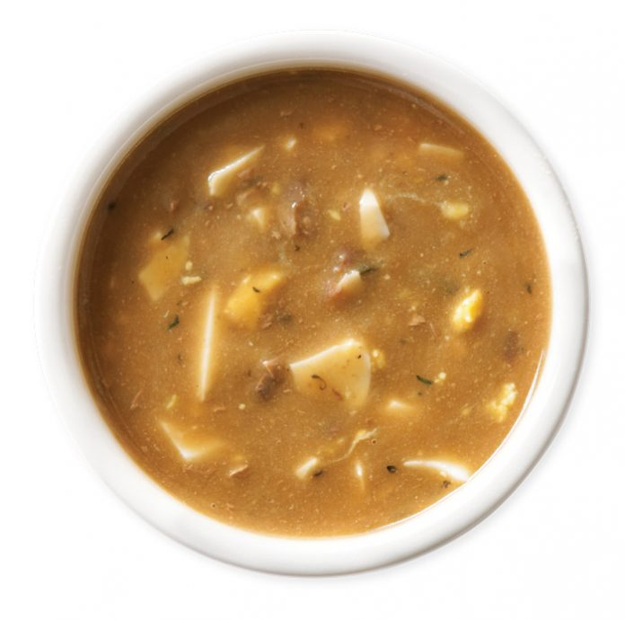

Giblet Gravy

Description
A great gravy to put on mashed potatoes, cornbread dressing, or on a Thanksgiving Turkey
Ingredients
- 1 giblet from a turkey
- 1/2 teaspoon salt
- 1/2 teaspoon ground black pepper
- 1 cube chicken bouillon
- 1 stalk celery, halved
- 1/4 yellow onion
- 1 quart water
- 4 hard-cooked eggs
- 2 tabelspoons cornstarch
- 1/2 cup milk
Steps
- In a 2 quart saucepan, simmer the giblets, salt, pepper, bouillon, celery and onion in 1 quart of water for 40 to 50 minutes.
- Discard celery, onion and gizzard. Chop liver and neck meat and return to pan. Add chicken broth or if you have a turkey,
use drippings (about 1 1/2 cups and 1 can of chicken broth).
- Chop eggs and add to broth. Mix cornstarch and milk together and slowly add to broth. Stir well until thickened. Reduce heat to low.
Recipe from allrecipes.com